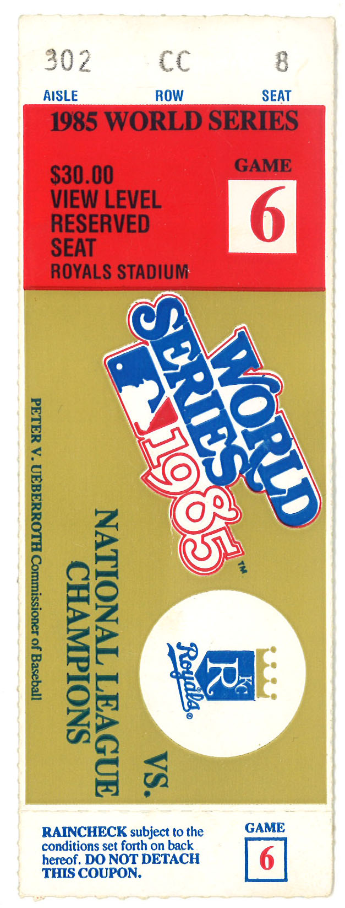

Martin Manley: My Life and Death
Born 8-15-53, Died 8-15-13 , Age 60
- Home Page
- January 1, 2012
- June 11, 2012
- Suicide Preface
- Why Suicide?
- Why not?
- Why Age 60?
- Self-Serving?
- Suicide - How 2
- Gun Control
- Other Suicides
- Other Quotes
- ------------------------------------
- Growing Up
- OMG: I look 60!
- Mom and Dad
- The Heavens
- My Religion
- Chancel Choir
- Victory O Lord
- The Proposal
- Two Marriages
- First Two Loves
- Pictures
- Trips and Travel
- Writing Fiction
- Music & Poetry
- Movies & TV
- Health
- Sleep Deprived
- Living Donor
- Food & Drink
- Creations
- Sports
- KC Star
- KC Tornado
- My IQ
- Synesthesia
- Poker
- Legal
- JOCO, Ks.
- U.S. Financial
- 911 & Conspiracies
- COOL STUFF
- Births & Deaths
Kansas City Chiefs & Royals
I’ve always been a Chiefs and Royals fan – at least as long as I can remember. There have, believe it or not, been times when a person could be proud to be a fan of one or even both. The Chiefs were decent in the 1960’s and 1990’s while the Royals were decent in the 1970’s and 80’s. But, they have rarely been decent at the same time.
In fact, over 44 years since 1969 (Royals first year), there have only been six seasons in which both teams had a winning record – 1973, 1989, 1991, 1993, 1994, 2003. By comparison, the Boston Red Sox and the New England Patriots each had winning seasons for 11 straight years from 2001-2011.
In recent years, the Chiefs have been disappointing while the Royals have just been bad. From 1995-2003, the Chiefs lost three years in the first round of the playoffs despite having a 13-3 record and home field. The Royals have only had a winning season once since 1995 - though are above .500 on August 15, 2013.
COOL FACTOID: From 2007-2012, the Chiefs tied for 30th out of 32 teams in the NFL by total victories. In the same six year period, the Royals ranked 30th of 30 teams in Major League Baseball by wins.
There simply is nowhere as bad as Kansas City when it comes to professional sports. Unfortunately, of all the places I could live and all the allegiances I could have in sports, I happen to have started my blog and maintained it in about the worst possible time and place – assuming I wanted to talk about wins and not losses!
The Royals are/were better in 2013 and the Chiefs are expected to be greatly improved. But, I’ve heard these songs before and they almost always (at least in the last 15 years or so), end on a flat note. Still, it would have been interesting to see how the Royals’ young players developed and how the Chiefs did with a “real” quarterback. But, as I discussed in the category “Why Not” to the left side, there will ALWAYS be things I might anticipate and things I would want to see. So, that’s not a reason to stay alive.

COOL FACTOID: The greatest moment of my sports life was game #6 of the 1985 World Series.
I had just finished watching game #5 - after the Kansas City Royals won to cut the deficit with the St. Louis Cardinals to three games to two. The phone rang and it was my brother Mike. He asked me if I wanted to go to game six of the WS. Of course I did, but I was taken aback because... how could he have tickets?
As it turns out, he had won some kind of lottery for them and had two tickets. Obviously, I wasn't going to turn down that opportunity. And, as fate would have it, the game became famous - or infamous if you are a St. Louis Cardinals' fan.
Kansas City trailed 1-0 going into the ninth inning. The first batter was Jorge Orta who got on first via an infield hit via a major blown call by first base umpire Don Denkinger. Kansas City went on to the victory because of a two-run single later in the inning by Dane Iorg.
But just to show you how pathetic my memory is... I have replayed that game (the ninth inning, especially) many times over the years. I see myself sitting on the first base side about equivalent to home plate. I would have bet that was true as much as I would bet my name is Martin. But... I was wrong! I dug this ticket stub out of my mementos box to post on this site. I thought for the heck of it, I would look up exactly where I was seated. I was shocked - and horrified to discover that I was way down the LEFT field line - a few miles from where I thought I was.
How in the world could a person mistake where they were seated in that game - of all games? I mentioned this to a reader in a conversation and he suggested the possibility that I had come to imagine that I was seated on the first base side because that's were all of the 9th inning replays of the blown call and winning run are shown from... and over the years, I may have simply "saw" what the camera showed me dozens of times and forgotten that I had seen it (once) from a much different angle.
Very perceptive and possibly true. But, whether it's as simple as that or not, it's first-class brain decay!
Being in that crowd when the second run came across home plate was a moment I'm sure my brother has never forgotten. It was amazing. Even better, KC went on to obliterate StL in the seventh game 11-0 to become World Champions.
But, that was then. The fact is the last playoff victory for the Chiefs was 1993 – 20 years ago. Even worse, the Royals haven’t even made the playoffs since game seven of the 1985 World Series – much less win a playoff game.
COOL FACTOID: No other city in the United States (or Canada) has as many as two professional franchises, regardless of sport (NBA, MLB, NHL and NFL), that have not won a playoff game (or series) since 1993. The only one even close is Cincinnati (NFL 1990 and MLB 1995).
I thought I would try to look at this in context of not just the four major professional sports, but also with respect to college FB and college BB.
What I ended up doing was going through every professional team in the four sports and logging when was its last victory in the playoffs. In addition, I went through all the college teams in all six major conferences for both FB and BB. I noted when was the last time each of those schools won an NCAA tournament (excluding the NIT) game and when was the last time each school won a bowl.
That adds up to a total of 266 “teams” – professional and college. I then decided to show a list of all of these teams that haven’t tasted victory in the post season for at least 10 years. As it turns out, that’s 38 of the 266. Shown below, but first…
COOL FACTOID: As shocking as it will be to anyone reading this – including myself… of the 69 major college football teams, 67 of them have won a bowl in the last 10 seasons. The longest dry spell is Duke (1960). But, if you would have guessed which team has the second longest dry spell, you would be the genius of all time. Believe it or not, Kansas State (2002) has the second longest non bowl victory drought of all 69 schools – at least as of 2013.
Here are the 38 “teams” (pro and college) that haven’t won a postseason game (or series) in the last 10 seasons.
Team | Sport | Last Playoff Win |
Georgia Bulldogs | NCAA Basketball | 2002 |
Kansas State Wildcats | NCAA Football | 2002 |
Minnesota Twins | MLB | 2002 |
Tampa Bay Bucs | NFL | 2002 |
Iowa Haweyes | NCAA Basketball | 2001 |
Penn State Nittany Lions | NCAA Basketball | 2001 |
Milwaukee Bucks | NBA | 2001 |
Toronto Raptors | NBA | 2001 |
Atlanta Braves | MLB | 2001 |
Seattle Mariners | MLB | 2001 |
Oakland Raiders | NFL | 2001 |
St. John’s Red Storm | NCAA Basketball | 2000 |
Portland Trail Blazers | NBA | 2000 |
Miami Dolphins | NFL | 2000 |
San Diego Padres | MLB | 1998 |
Clemson Tigers | NCAA Basketball | 1997 |
Providence Friars | NCAA Basketball | 1997 |
Baltimore Orioles | MLB | 1997 |
Florida Panthers | NHL | 1996 |
Cincinnati Reds | MLB | 1995 |
Buffalo Bills | NFL | 1995 |
Cleveland Browns | NFL | 1994 |
Toronto Blue Jays | MLB | 1993 |
New York Islanders | NHL | 1993 |
Kansas City Chiefs | NFL | 1993 |
Detroit Lions | NFL | 1991 |
Cincinnati Bengals | NFL | 1990 |
TCU Horned Frogs | NCAA Basketball | 1987 |
Kansas City Royals | MLB | 1985 |
Rutgers Scarlet Knights | NCAA Basketball | 1983 |
Oregon State Beavers | NCAA Basketball | 1982 |
Pittsburgh Pirates | MLB | 1979 |
Duke Blue Devils | NCAA Football | 1960 |
Charlotte Bobcats | NBA | Never (2005) |
Columbus Blue Jackets | NHL | Never (2001) |
Winnipeg Jets | NHL | Never (2000) |
Northwestern Wildcats | NCAA Basketball | Never (1905) |
Nebraska Cornhuskers | NCAA Basketball | Never (1897) |
Note: When “Never”, I’ve shown the first year of the team’s existence in parentheses. Also, Northwestern hasn’t won an NCAA tournament basketball game, but worse, it has never even been invited to the tournament! Nebraska has been to the tourney six times with a 0-6 record.
Also of interest, Northwestern football recently won its first bowl (Gator) since 1948.
As you can plainly see, the Chiefs and the Royals rank in the bottom 16 of all 266 teams. If you take out Charlotte (NBA), Columbus and Winnipeg (NHL) due to them having not been in existence as long as since the Chiefs and Royals last won a playoff game, then they both rank in the bottom 13!
If you remove TCU and Rutgers as not having been in major conferences since the Chiefs or Royals last won a playoff game, then both KC teams rank in the bottom 11.
That’s how pathetic things are around here from a professional sports point of view. I’m not going to miss more of the same… that’s for sure! But, then it's also true that someday that will turn around - and I will miss that!
Copyright 2013 Martin Manley Life and Death. All rights reserved.